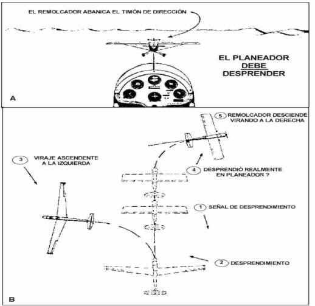

CURSO TEÓRICO
DE
PILOTO DE PLANEADOR
[ Arriba ] [ 1ª Sección ] [ 2ª Sección ] [ 3ª Sección ] [ 4ª Sección ] [ 5ª Sección ] [ 6ª Sección ] [ 7ª Sección ] [ 8ª Sección ] [ 9ª Sección ] [ 10ª Sección ] [ 11ª Sección ] [ 12ª Sección ] [ 13ª Sección ] [ 14ª Sección ] [ 15ª Sección ]
9ª Sección: PROCEDIMIENTOS PREVIOS AL DESPEGUE, DESPRENDIMIENTO DEL AVIÓN Y PLANEADOR, Y SEÑALES EN VUELO
PROCEDIMIENTOS PREVIOS AL DESPEGUE
Antes de cada despegue, ambos
pilotos repasarán en conjunto los procedimientos de emergencia que puedan presentarse
durante las diferentes fases de la operación.
Este incluirá el conocimiento
del ángulo de planeo de cada aeronave y las distancias que será factible cubrir desde
alturas y posiciones determinadas.
Cada uno preverá una
alternativa tal como: aterrizar directamente hacia adelante; realizar un rápido cambio de
frente de 45º, 90º o 180º para aterrizar con viento cruzado, de cola, o completar un circuito
“apretado” (para ello el planeador deberá poseer una muy buena relación de
planeo), o aterrizar fuera de los límites del aeródromo.
Con vientos mayores de 36 km/h (20 nudos), los aterrizajes
con viento de cola o de costado no son recomendables. Dependiendo de la altura, con
vientos fuertes el planeador podrá generalmente aterrizar en lo que resta de pista
empleando spoilers y/o deslizamientos.
En ningún caso se intentará un cambio de frente de 180º con menos de 100 m (300 pies), o de 360º por debajo de los 150 m (500 píes). En estas condiciones será
mejor no tratar de regresar al punto de partida.
Después de una completa verificación de pre-vuelo de
ambas aeronaves, el planeador será transportado al extremo de la pista y la soga estirada
desde ese punto hasta donde se estacionará el avión para el despegue.
No se tensará completamente la línea a fin de obtener
margen para la operación de enganche, y quienes la instalen se asegurarán de que no se
atasque con algún objeto del terreno. Si estuviera desalineada o enganchada, podría
producirse un fuerte tirón al estirarse, que arrastraría al planeador violentamente
hacia cualquier lado pudiendo ocasionar un accidente.
Cuando el remolcador esté listo, la soga se conectará al
avión. En el primer vuelo del día es aconsejable verificar el mecanismo de
desprendimiento de ambas aeronaves haciendo tensión sobre la cuerda y accionándolo. La
soga se revisará periódicamente, para detectar hilos sueltos o puntos débiles.
Obtenida la señal correspondiente del piloto del
planeador, se conectará al mismo. No se realizará esta conexión hasta que la
tripulación se encuentre en la cabina y haya dado su conformidad para hacerlo. Esta
operación se realizará con personal experimentado o al que se le haya impartido una
instrucción adecuada.
Los ocupantes del planeador serán siempre quienes
determinen cuándo iniciar el despegue. Cumplidos todos los procedimientos de
verificación; cerrada la cabina y sin obstáculos entre ambas máquinas
(planeador-avión), recién tendrá lugar la señal correspondiente. Nunca se indicará al
remolcador que estire la línea o se nivelarán las alas del planeador, hasta que su
piloto lo disponga. Cuando a bordo haya dos personas, será responsabilidad de la que
esté al mando, controlar que la restante tenga instalado y asegurado el cinturón de
seguridad antes de permitir el enganche, debiendo asimismo preguntarle si está lista para
el despegue.
El ayudante será responsable de controlar el tráfico,
tanto en tierra como en vuelo, las condiciones del viento y que la pista esté despejada,
antes de pasar la señal de iniciación de la maniobra. Por su parte ambos pilotos
realizarán desde sus respectivas cabinas el mismo control, demorando o suspendiendo la
operación en caso que consideren no están dadas las condiciones seguras para realizarla.
Cada uno de ellos -si la recibe- obedecerá de inmediato la señal de suspender el
despegue, actuando sobre los respectivos mecanismos de desprendimiento.
DESPRENDIMIENTO DEL PLANEADOR EN EL DESPEGUE
Si se
produce durante la carrera, el remolcador notará inmediatamente que su máquina
incrementa la velocidad y se “aliviana”.
Si aún tiene suficiente pista por delante reducirá el
motor, abortando el despegue y deteniendo el avión en el costado izquierdo de la pista.
El planeador, por su parte, aterrizará o se desviará
hacia el lado opuesto.
Antes de adoptar estas medidas, el remolcador se
asegurará que realmente existe la situación de emergencia. Una impresión falsa puede
ocasionar serias consecuencias.
A fin de evitar una decisión apresurada comprobará por
el espejo retrovisor que efectivamente se produjo el desprendimiento, antes de reducir la
potencia y suspender el despegue.
Si el inconveniente ocurre con el avión ya en el aire,
continuará la maniobra arrojando la soga y realizando posteriormente el circuito de
tránsito y aterrizaje normal. Nunca intentará volar a baja altura con la cuerda
prendida.
DESPRENDIMIENTO DEL AVION EN EL DESPEGUE
Si se produjera en el avión
el procedimiento será similar, debiendo en esto caso ser el planeador quien arroje la
soga.
Si la emergencia surgiera por falla parcial o total del
motor, la situación más comprometida se presentará cuando el inconveniente ocurra
justamente en el momento de despegar. En este caso, antes de adoptar cualquier actitud se
harán las señales convenidas -el avión accionará enérgicamente el timón de
dirección en ambos sentidos-, para que el planeador desprenda; si éste no lo hiciera
procederá a desconectar la soga, continuando el aterrizaje de emergencia de acuerdo con
su juicio, experiencia y posibilidades, recordando que no deberá intentar regresar a la
pista en razón de la escasa altura que dispone. (Fig. Nº 3 A.)

Figura Nº 3 - Desprendimiento
Si la
falla ocurriera a mayor altura procederá como en el caso anterior con la diferencia que,
producido el desprendimiento del planeador, inmediatamente soltará la soga para realizar
el aterrizaje sin ella. Dentro de lo posible nunca se intentará un aterrizaje en
emergencia con la soga colgando.
Si durante el despegue se produjera una ganada, pinchadura
o reventón de un neumático se cortará de inmediato el remolque, procediendo cada piloto
individualmente, evitando el del planeador embestir al avión.
SEÑALES EN VUELO
Durante
los remolques, alcanzada la altura del desprendimiento o encontrando un área de
ascendentes el piloto del planeador -si lo desea- puede ejercitar su derecho de
desprenderse del avión.
Por su parte, cuando el remolcador lo crea conveniente o
durante emergencias, puede ordenar el desprendimiento del planeador, aun cuando no se
encuentren en el lugar convenido o adecuado. La señal para esto será un enérgico
movimiento del timón de dirección. (Fig. Nº 3 A.)
Si necesitara cambiar de dirección, el piloto del
planeador lo desplazará lo máximo posible al lado opuesto del que desea hacerlo,
"tirando" así el eje longitudinal del avión al rumbo deseado.
Volver Arriba